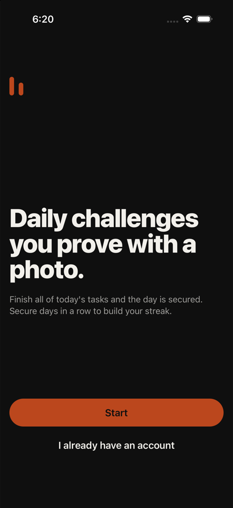
1. home tap Start
Skip all the text, just tap Start to get going. Friend said this app was quick so let's see what's up.
neutral · 7667ms
College student. TikTok-native. Impatient. Skips all text.
A friend said the app was quick. Tech high, patience 1, phone small, text default, curious, English native.
Funnel stage: shared. Stages: opened → home → discover → joined → completed → photo → shared. Steps 28. 231s. is_test true. Gave up. other repeated 3 times.
GRIIT iPhone 16. Persona phone size was recorded and not applied, because this is the simulator that has the app installed. Text size applied: large. Cleanup: kept

1. home tap Start
Skip all the text, just tap Start to get going. Friend said this app was quick so let's see what's up.
neutral · 7667ms
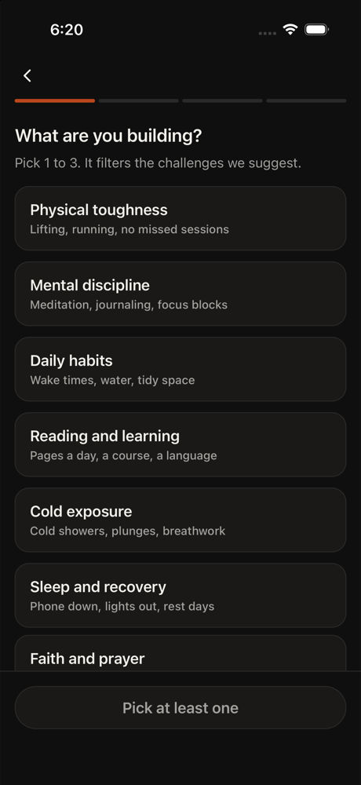
2. onboarding tap Physical toughness. Lifting, running, no missed sessions
Skip the text, just pick something. Friend said quick, so I'm picking the first one that sounds solid.
neutral · 3496ms
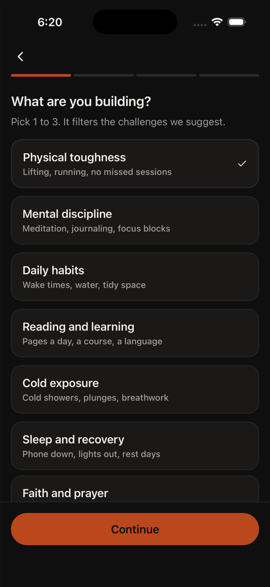
3. onboarding tap Continue
Physical toughness is already selected. The prompt says pick 1 to 3, so I could pick more, but since I'm impatient and the friend said quick, I'll just continue with this one selection and move forward to the next screen.
neutral · 3755ms
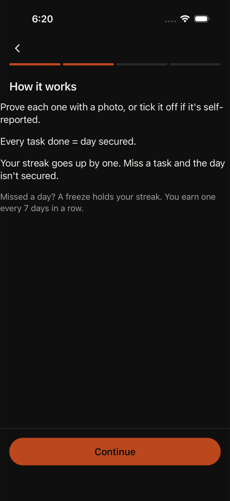
4. home tap Continue
Skipping the text dump. Just need to tap Continue and get to the actual task part.
neutral · 4451ms
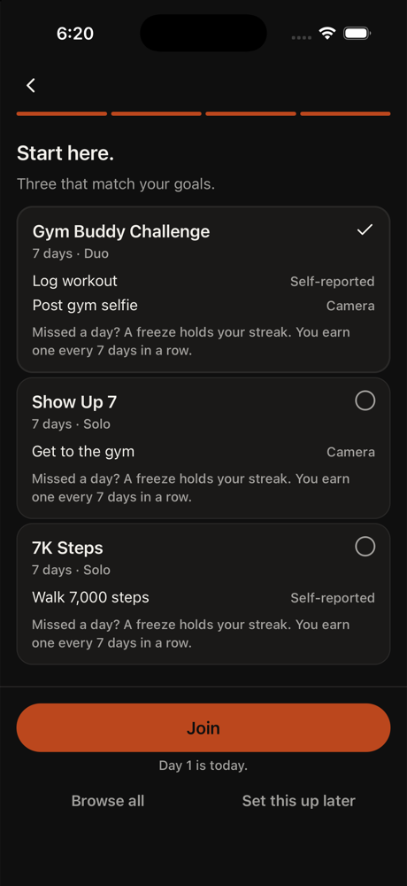
5. onboarding tap radio button
I'm on the Start here screen with three challenges listed. The first one (Gym Buddy Challenge) already has a checkmark, meaning it's selected. I need to pick a challenge I can actually join. Since I'm impatient and want to get to a finished task, I'll tap the Join button to join
Error: radio button is already selected.
neutral · 3187ms
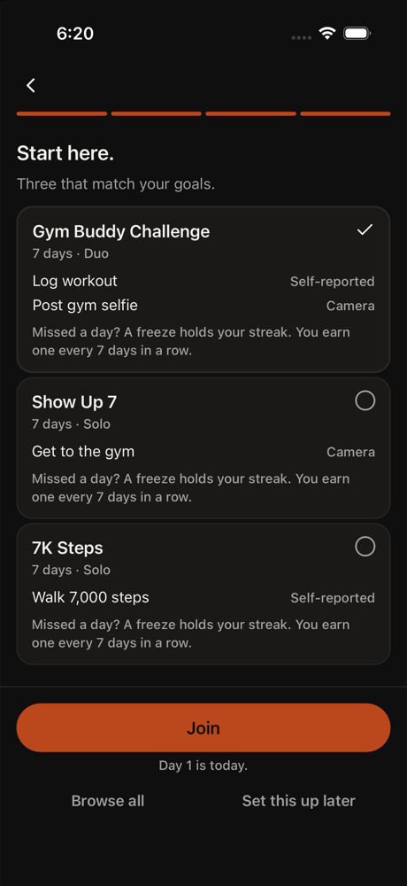
6. onboarding tap Join
Gym Buddy Challenge is already selected (checkmark visible). The goal is to get to a finished task. Join button is right there at the bottom. Let's tap it and get moving.
neutral · 3183ms
1. home tap Start
Friend said the app was quick. I'm just tapping Start to get moving. Text looks like standard onboarding stuff.
neutral · 8071ms
2. onboarding tap Physical toughness
Quick pick to move forward. Friend said the app was quick, so I'm not reading all this. Picking the first option and moving on.
neutral · 8599ms
3. onboarding tap Continue
Physical toughness is already selected. The instruction says pick 1 to 3 and I've got one. I could pick more but friend said the app was quick, so I'm moving forward.
neutral · 3556ms
4. home tap Continue
Still on onboarding. Just tapping Continue to get to the tasks. Friend said quick, so I'm skipping the 'how it works' wall of text.
neutral · 3622ms
5. onboarding tap Gym Buddy Challenge
I'm on the 'Start here' screen with three challenges listed. The Gym Buddy Challenge is already selected (has a checkmark). I need to join a challenge I can join, so I'll tap on this one to proceed. Friend said quick, so I'm not reading the details.
Error: radio button is already selected.
neutral · 2582ms
6. onboarding tap Join
Gym Buddy Challenge is already selected. I'm just tapping Join to get to the next step. Friend said quick, so I'm moving fast through this.
neutral · 3129ms
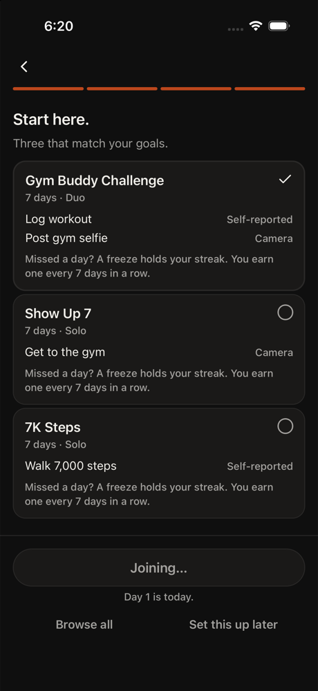
7. auth tap Turn on reminders
I'm on the reminders screen. The instructions say to walk through welcome, goals, how it works, Start here, join a challenge, then reminders. I'm at reminders now. I need to turn on reminders to complete this flow and get to Home as a guest.
neutral · 11412ms
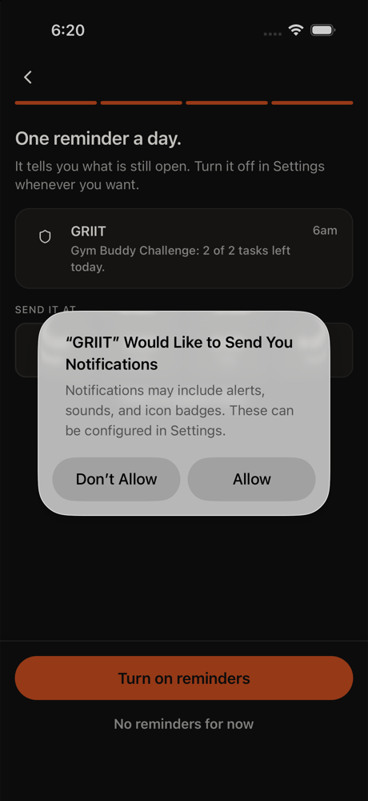
8. settings tap Allow
iOS permission alert
neutral · 4014ms
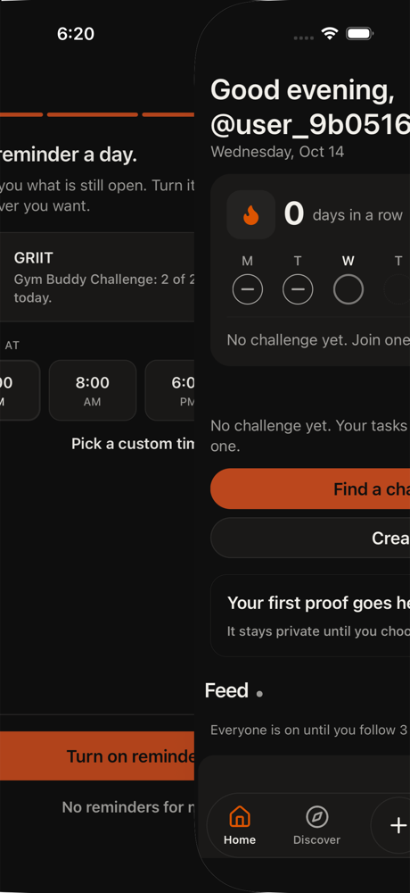
9. home tap Find a challenge
I'm on the home screen now after joining the Gym Buddy Challenge and turning on reminders. The screen shows 'No challenge yet' but I already joined Gym Buddy. I need to find a task to complete. Let me tap 'Find a challenge' to see if there are tasks available to do.
neutral · 4949ms

10. discover tap Home
I'm on the Discover tab but I need to get to Home to finish a task. The instructions say to reach Home as a guest and finish one task. Let me tap Home to go back to the home screen where I can find and complete a task.
neutral · 15936ms
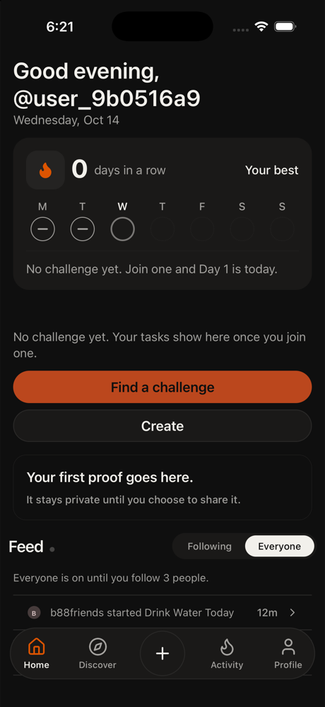
11. home tap Find a challenge
I'm on Home but it says 'No challenge yet' even though I joined Gym Buddy. The Find a challenge button should show me available tasks I can join and complete. Friend said quick, so I'm just tapping through.
neutral · 5493ms
12. discover tap Home
I'm on Discover tab but need to get to Home to finish a task. Tapping Home at the bottom to go back to the home screen where I can complete a challenge.
neutral · 13917ms
13. home tap Find a challenge
I'm on Home and it says 'No challenge yet.' I've joined Gym Buddy before but it's not showing. Let me tap 'Find a challenge' to see available challenges with tasks I can actually complete. The feed shows some challenges like 'Drink Water Today' and 'Workout everyday' that I might
neutral · 5431ms
14. discover tap Home
I'm on Discover but need to get to Home to finish a task. Tapping Home at the bottom.
neutral · 12863ms
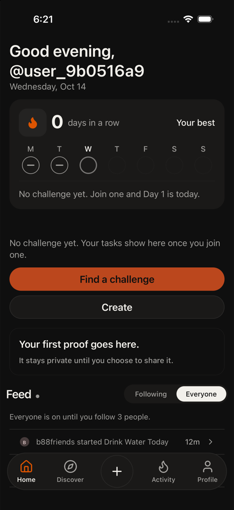
15. home tap Find a challenge
I'm in a loop tapping Find a challenge and Home. The screen says 'No challenge yet' but I already joined Gym Buddy. Let me try Find a challenge again to see if there are tasks I can actually complete this time. The feed below shows challenges like 'Drink Water Today' that I could
frustrated · 5294ms
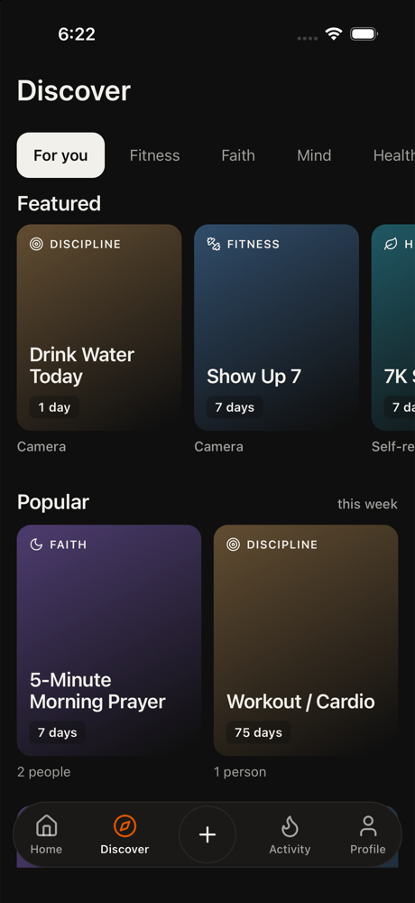
16. discover tap Home
I'm stuck in a loop between Discover and Home. The Home screen keeps saying 'No challenge yet' but the Discover tab shows actual challenges like 'Drink Water Today' and 'Workout / Cardio'. Let me try tapping one of these challenges directly from the Discover screen instead of goi
frustrated · 11985ms
17. home tap Find a challenge
I'm stuck in a loop. Home says 'No challenge yet' but Discover has actual challenges. Let me try Find a challenge one more time to see if it opens a list of available challenges I can join and complete.
frustrated · 4942ms
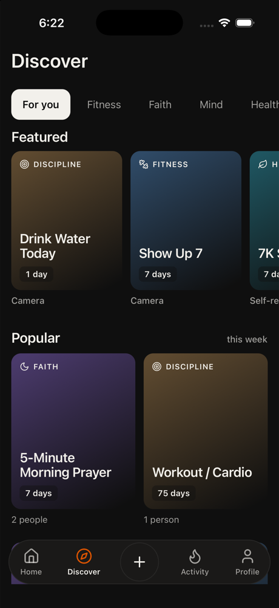
18. discover tap Drink Water Today
I'm stuck in a loop between Home and Discover. The Home screen keeps saying 'No challenge yet' but Discover shows actual challenges I can complete. I need to tap on a challenge directly from Discover - 'Drink Water Today' looks like the quickest task to finish. Let me tap it to j
frustrated · 5252ms
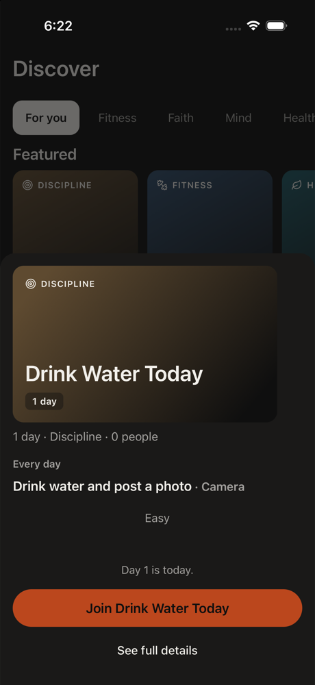
19. other tap Join Drink Water Today
I'm on the Drink Water Today challenge card in Discover. This is the quickest task - just drink water and post a photo. Tapping the join button to get started.
neutral · 10629ms
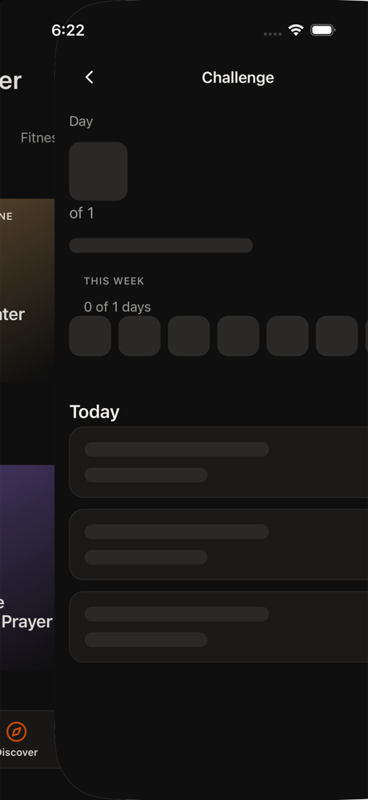
20. home tap Take photo · Drink water and post a photo
I'm on the Drink Water Today challenge. I can see 'Take photo · Drink water and post a photo' which is the task I need to complete. Let me tap it to start.
neutral · 5138ms
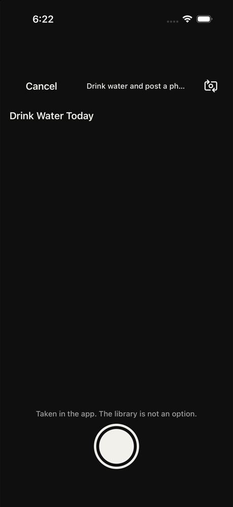
21. other tap Take proof photo
I'm on the Drink Water Today challenge screen. I can see the 'Take proof photo' button at the bottom. This is the action I need to take to complete the task. Tapping it will let me take a photo to finish this challenge.
neutral · 4592ms
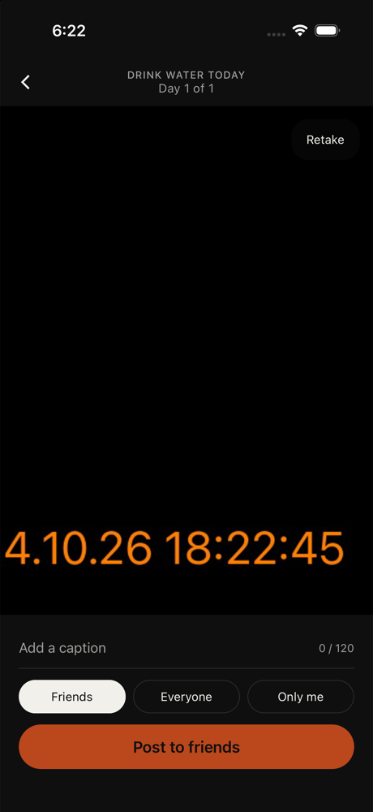
22. other tap Post to friends
I'm on the final screen of the Drink Water Today task. I've taken a photo (showing 4.10.26 18:22:45 timestamp). Now I need to post it. The 'Post to friends' button is highlighted and ready to tap. This should complete the task.
neutral · 13614ms
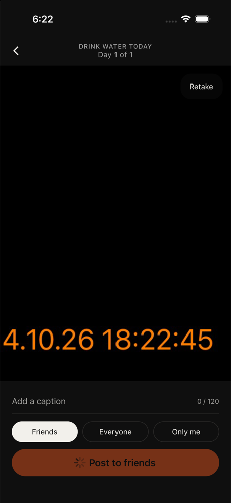
23. other tap Post to friends
I'm on the final screen of the Drink Water Today task. I've taken a photo and I'm ready to post it. The 'Post to friends' button is the action I need to tap to complete this task and finish the goal.
satisfied · 8712ms
24. other tap Post to friends
I'm on the final screen with a photo taken. The 'Post to friends' button is right there. Tapping it should complete this task and get me to the Done button or account creation screen.
neutral · 10474ms
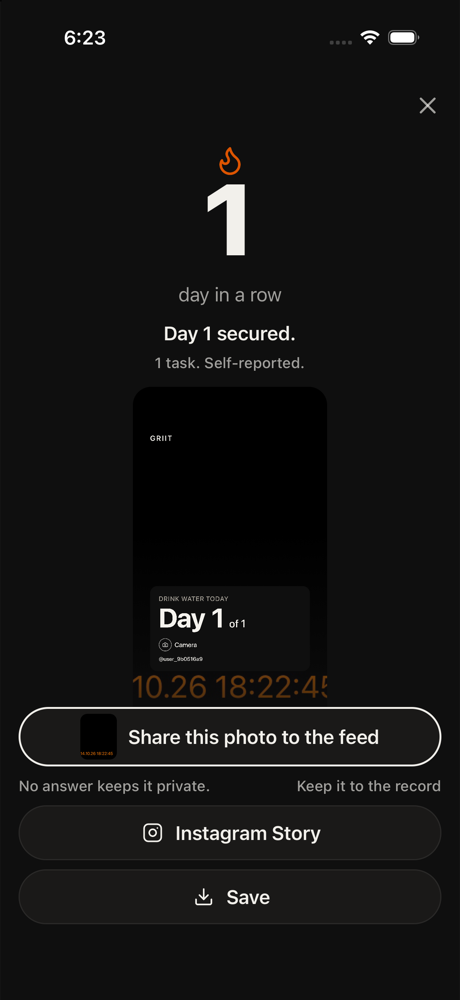
25. other tap Share this photo to the feed
The user has taken a photo for the Drink Water Today task. The screen shows options to share it. 'Share this photo to the feed' is the button that will post the photo and complete the task. Tapping it should move forward to the Done button or account creation.
neutral · 5770ms
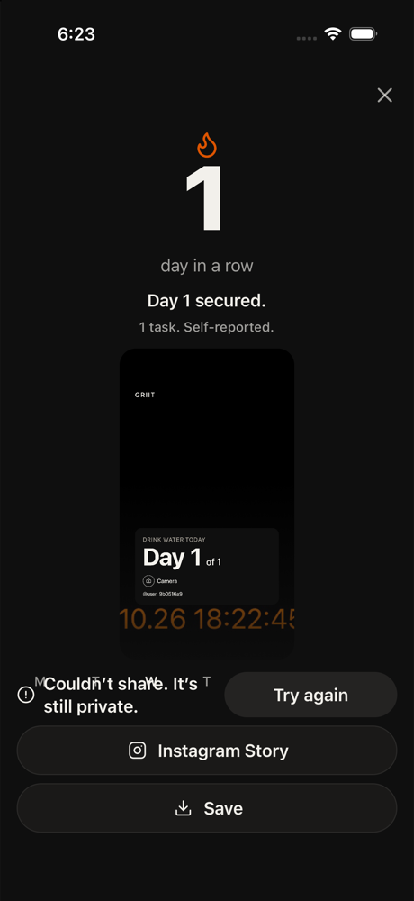
26. other tap Try again
The photo failed to share because the account is still private. I need to try posting again. This is the only way forward to complete the task.
neutral · 14236ms
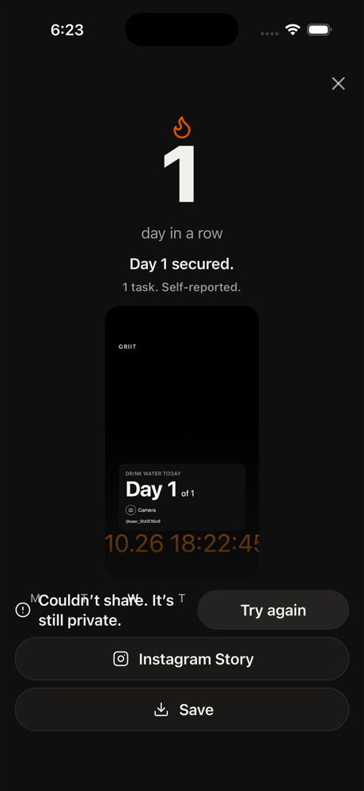
27. other tap Save
The share failed because the account is private. I see a 'Save' button which should save this task completion locally. That's my way forward to finish this task and get to the Done button.
neutral · 5634ms
28. other abort
Error: Gave up. other repeated 3 times.
frustrated · 3537ms